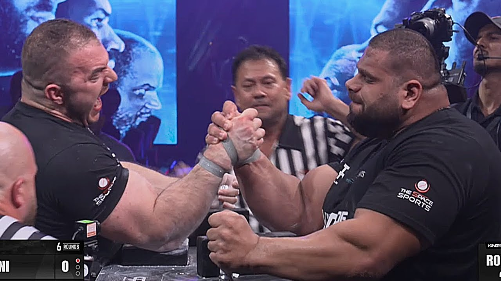
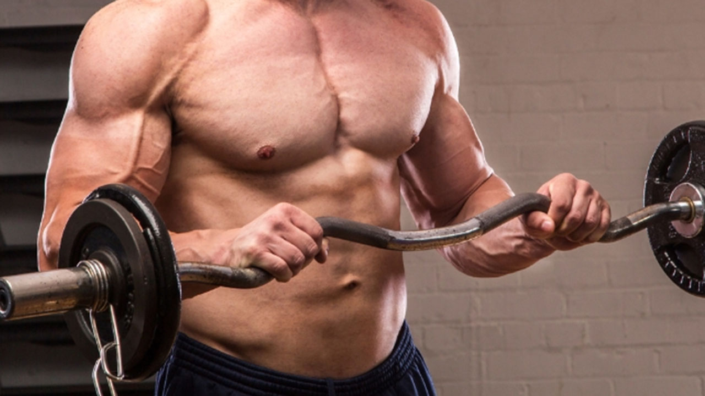
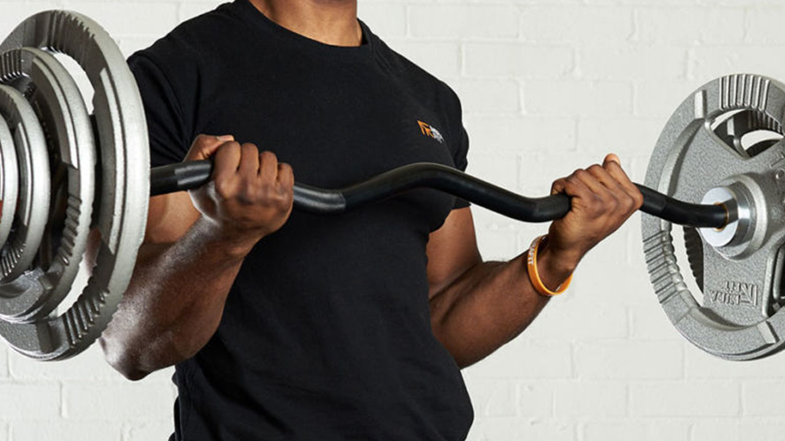
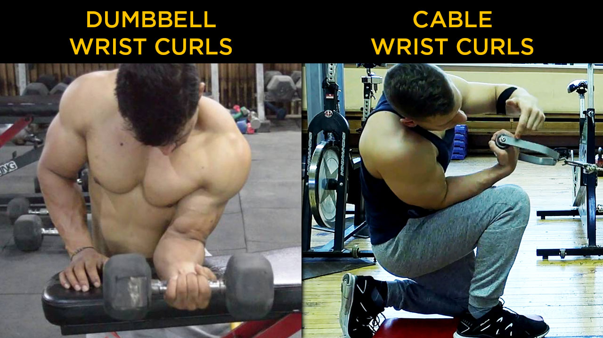
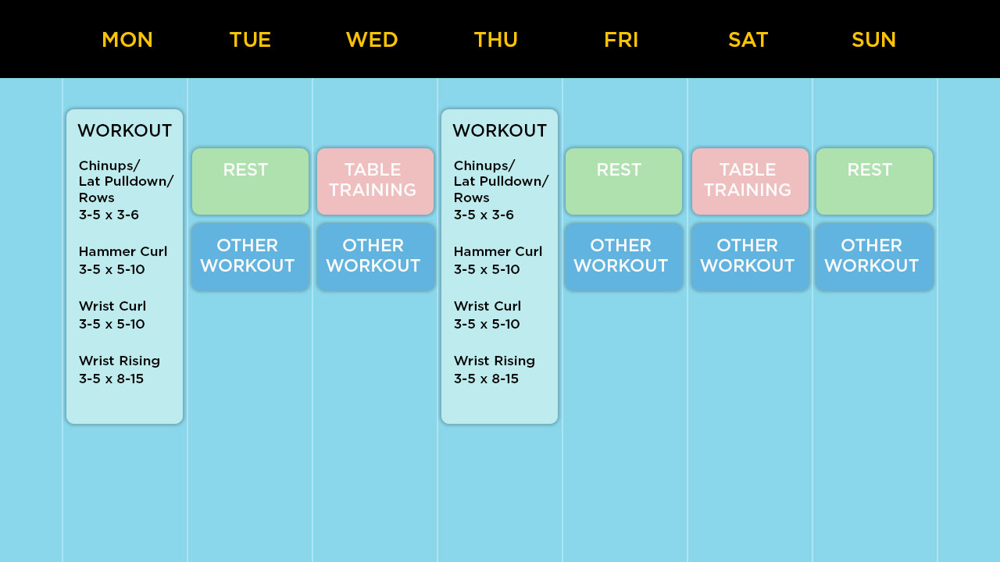

How To Build Stronger Backpressure
Back Pressure, in the purest form, is the movement of the elbow away from the front of the pad, while keeping the hand high.
- The Latissimus Dorsi and Upper-Back - working across the shoulder joint to pull the elbow backwards
- The Elbow Joint - working to keep the hand high through the forearm
- The Wrist Joint - working to keep as high a hand position as possible
Primarily this involves:
In actual, high level competitions, Back Pressure is going to look less dynamic and more static at times, since the opponent will also be applying back pressure and then it becomes a battle of who can apply more Back Pressure for longer.
Even within the more simple, ‘pure’ Back Pressure, there are variations which mainly vary the amount of work each of the involved joints provide.
- Posting is Back Pressure, but the backwards drag of the elbow to the body is much less, placing the brunt of the stress on the elbow and wrist.
- A Lat Drag is also Back Pressure, but sacrifices wrist height and generally has a more open elbow with the main focus being on the lat itself bringing the whole arm back to the body.
So let’s break down the entire chain of muscles involved, and the best ways to train them.
Movement vs Strength
First of all, we need to remember that strengthening a movement is not necessarily the same thing as strengthening the tissue involved in a movement. Back Pressure, in all of its forms, is a movement, and the best way to strengthen that movement is simply to practise it correctly. This practice, through neural improvements, will strengthen the movement through efficiency and the ability to recruit more and more actual fibres within the movement.
An elite athlete who is a master of back pressure has practised it for many many thousands of repetitions. He or she will be able to produce that movement with very little delay or unnecessary movements and with much more force, more quickly than someone entirely new to the movement, even if the weights they used in training the muscles for the movements were equal.
The Movement
The movement of Back Pressure, like we said before, involves 3 joints primarily.
- The Shoulder Joint - Where the muscles of the back pull the Humerus and the Elbow backwards, closer to the body.
- The Elbow Joint - Where the Elbow Flexors (The Bicep, The Brachialis and the Brachioradialis) work to close the angle between the Humerus and the Forearm(Elbow Flexion)
- The Wrist Joint - Where the muscles of the forearm work to keep the hand elevated and ideally in slight flexion rather than extension.
The Muscles Involved
Looking first at the shoulder joint working on the upper arm, the muscles involved for this movement are:
- The Latissimus Dorsi(Lats) - Which are very powerful muscles that pull the elbow closer to the torso
- The Teres Major - Which are smaller muscles beneath the shoulder that support the Lats in this motion
- The Posterior Deltoid Muscles - Smaller muscles again at the back of the shoulder which also help to pull the arm back
- Mid Trapezius and Rhomboids - Which work as supporting muscles to prevent the shoulder rounding forwards and allow the elbow to be dragged forwards
So, we can see that the muscles involved cover the vast majority of the upper back, and having a very strong upper back is certainly going to be beneficial as far as strength goes.
At the elbow joint, the muscles involved are:
- The Brachialis - which is the deepest, and strongest elbow flexor in pronation and neutral forearm rotation because of its very advantageous attachment positions across the elbow joint. However, in a supinated rotation of the forearm, the Brachialis is less optimally positioned, and so the bulk of the work passes on to the next muscle.
- The Bicep (Biceps Brachii) - Which is another elbow flexor, but attached more superficially and not directly to the upper arm bone, instead it is attached at the shoulder and to the forearm, which allows it to participate in shoulder and elbow movement. Here, we want to focus on the elbow activity, which is again flexion of the forearm towards the upper arm, but, since the bicep connects to the inside of the Radius, it also works to pull and rotate the forearm outwards, also called Supination.
- The Brachioradialis - which sits superficially on the outside of the elbow joint, originating halfway down the humerus and crossing over the elbow, with the muscle terminating half way down the forearm, and the tendon of it extending even further, all the way to the wrist. The Brachioradialis, given its outside position on the arm, works best to flex the elbow when the forearm is at a neutral, or slightly pronated rotation.
So, while all three of these work to flex the arm at the elbow joint, for pronated or neutral forearm rotation techniques like the Top Roll or Rising, the Brachialis and Brachioradialis are more involved, while the Bicep comes more into play with inside techniques such as a Hook, or defending a position if the opponent has been able to over power your pronation and force you into supination.
Finally, we get to the wrist joint, although the muscles responsible for this action are found in the forearm, running across the wrist joint.
- The Extensor Carpi Radialis Longus and Brevis - which actually originate on the bottom of the upper arm, so technically also work as elbow flexors, but given their position all the way at the bottom of it, are very weak in comparison to the elbow flexors we described before. Primarily, they work to raise the wrist towards the radius, also called Radial Deviation or Rising.
- The Abductor Pollicis Longus - which originates halfway down the forearm on the outside of the Ulnar, crossing over the wrist joint to connect at the base of the thumb, so this muscle lies roughly parallel to the previous muscles and assists in the same motion.
- The Flexor Carpi Radialis - which originates on the inside of the elbow, again very low on the humerus, running all the way down the inside of the forearm before crossing the wrist and attaching again at the base of the thumb, but on the inside.
So these are the primary muscles responsible for Radial Deviation(Rising) at the wrist.
In addition to pure radial deviation, having at least a little wrist flexion strength will dramatically strengthen that rising position, so it is worth training wrist flexion alongside radial deviation. For which the muscles are:
- Flexor Carpi Radialis
- Flexor Carpi Ulnaris
- Palmaris Longus
- Flexor Digitorum Superficialis
- Flexor Digitorum Profundus
- Flexor Pollicis Longus
Which make up the majority of the muscle mass on the inside and bottom of the forearm and they all work to bring the palm and fingers closer to the forearm.
Strengthening The Muscles
Theoretically, the best way to strengthen the Muscle and Tendons involved in Back Pressure would simply be to perform Back Pressure against a progressively increasing resistance. In practice this would either be done on a table against a human opponent, or against a pulley with a strap over the knuckle and the cable angle being roughly 90 degrees from the forearm. But there are a few problems with this.
Firstly, the Wrist is almost always going to be the weak point in this movement, so once a weight is used that compromises the wrist, you can still target the elbow and shoulder, but you have begun to reduce the specificity of the movement.
If we follow this further, we can see the elbow would be the next weakest joint, at which point the movement does not really resemble back pressure at all, and becomes a very limited, odd angle row.
And, in actual matches, back pressure is very rarely challenged in perfect conditions. Most of the time, your opponent is working to actively undo your back pressure through whichever movements they can, so strengthening Back Pressure as a movement purely by performing perfect Back Pressure against resistance is going to provide very limited utility in actual performance.
In which case, considering the individual joints will break down at some point anyway, it would seem much more beneficial to try and isolate those joints and challenge them in ways that work more efficiently to challenge just those joints.
So, what are the best exercises for these?
The Back Muscles
We have already outlined the muscles involved in these movements, so it is simply a case of finding exercises that challenge the muscles, whether that be in very isolated exercises where only single muscles are targeted, or in more compound exercises where a chain of muscles are challenged.
Let’s start with the compounds, as these will allow the heaviest loads to be used, and provide an overall greater stimulus across the chains involved, just as you can squat much more weight than you can use on a leg extension machine.
As the wrist is a significantly limiting factor, it is not worth including it in an exercise that challenges the strongest muscles of the back, since the back will receive very little stimulus from that exercise, so, as a maximum spread of involvement, an exercise that challenges the back and shoulder joint should only challenge the elbow flexors.
And that basically gives us some form of Pull Up, Pull-Down or Row, which are all compound exercises that primarily challenge the lats and upper back but also involve some amount of elbow flexion.
To be more specific we could use a neutral or hammer grip, but using Pronated or Supinated grips would still challenge the majority of muscles involved to some degree, and having a strong supinated grip chin up is certainly not going to be a negative.
The Pullup is an excellent movement, that if you can do well, you probably should do above all else, but for a lot of people, it is difficult to achieve a lot of useful volume with it, whether that be due to bodyweight, strength or injuries. So as a replacement, or addition, the Lat Pulldown or Cable Row becomes a good option.
Personally, I like the standing one arm cable row from a higher angle, since it allows the arm to go from extended to tightly against the side with a constant resistance against the back and elbow and gets you used to holding a very tight position whilst keeping everything active.
Of course, a problem with the standing cable row is that once you reach a high enough percentage of bodyweight, you begin to row yourself into the cable, or have to exert excess energy attempting to resist that, taking the focus away from the movement itself, so you would have to either anchor yourself to the ground somehow or switch to something like the seated cable row, where you are locked into the machine and the focus becomes entirely on the pull, although if it is as it most often is, from a lower angle, then the work across the elbow joint reduces.
An alternative then is free weight rows or machine rows.
For Machines, there are a lot of quite common row-machines that allow you to reproduce that neutral grip pull like a seated cable row, and normally the machine gives a pad to anchor your body against. But again, this targets the back and reduces the involvement of the elbow flexors.
Finally, for rowing type movements, we have free weight exercises like Barbell or Dumbbell Rows.
The main problem with using free weights to target multiple joints is that we only have gravity to work against, which unfortunately only works in one direction.
So, for things like a Dumbbell Row, in order to position the body so that the back is challenged, we have to reduce the amount the elbow flexors are challenged, unless we begin to manipulate the movement so that the elbow is hit too, but that reduces an advantage of free weights. Which is that given the fixed direction of resistance, the joint and muscles doing the actual work can be loaded much more suitably to their own strengths and more specifically focused on.
So, while a Pullup is targeting the upper back and elbows very well, it isn’t very specific, whereas a Dumbell Row can be used to focus much more on the lats or other back muscles by adjusting body positions.
Really, you would benefit from doing a wide range of the available exercises, in a variety of reps, sets and weights used to get a variety of benefits from each. It’s definitely worth experimenting with because exercise preference can be very individual. Every person doing the exercise is slightly different, has different injuries, has different equipment available and possibly most importantly - has some movements they just like more,, which means they will stick with them for much longer.
The Elbow Muscles

As we said before, it’s beneficial to prioritise the strongest muscles in a chain when trying to strengthen that chain most efficiently, and since we’ve isolated the shoulder joint and back muscles already, the next in line is the Elbow Joint and Elbow Flexors.
As we outlined, there are three primary elbow flexors, the Brachialis, the Biceps and the Brachioradialis and these all simply handle bending the elbow at varying rotations of the forearm.
- The Brachioradialis - in Pronation or Neutral rotation.
- The Brachialis - in Pronation or Neutral rotation.
- The Bicep - in a Supinated rotation.

We can hit all of these with varying grips of Pull Ups, Chinups or Rows, but most of those end with the elbow not quite fully flexed, which ignores one of the more important areas of strength in Armwrestling, a tightly closed elbow joint. So, it’s worth adding exercises that directly challenge the flexors.
And these are basically all just curls of varying types, with an emphasis on Neutral or Hammer, and Pronated or Reverse Grips, unless the aim is Defence and Hook type strength, when a Supinated grips become more useful.
Mechanically, there is no great difference between different types of curls outside of range of motion and loading angle. Since the elbow joint covers a relatively wide angle of movement, free weight and single directional resistance movements will have trouble equally loading the joint throughout the entire movement.
Luckily in Armwrestling, the Elbow joint is only usually asked to work from around 45 degrees to 135 degrees, leaving the more open angles less essential and since in this angle the muscles are weaker, more elongated, prone to injuries and less able to work in general, avoiding this fuller extension can be useful, but should not be entirely ignored for overall elbow health and mobility.
So, as you’ve probably seen, the bread and butter of most Armwrestling workouts, especially for Back Pressure and Top Roll focused athletes are lots and lots of Hammer Curls.

The things you can vary within this are range of motion, position of the weight, volume, actual weight used and time under tension.
You can make arguments for why each of these and all of the different variations available offer benefits but eventually they all return to just loading the elbow joint in a neutral rotation with an aim to progressively overload the weight used. It does not really need to be more complex than that, and you do not need to feel limited to particular exercises if you don’t like doing them.
Yes you can throw in curls in a fully pronated position, also known as reverse curls, but it’s likely that the weight used will be significantly less and one of the main problems with reverse curls is the ability to hold onto the weight while keeping a neutral wrist.
As we said before, the wrist is often weaker than the elbow. In the reverse curl we are challenging wrist extension, which is going to be one of the weakest of all possible wrist movements, so it will fail far before the joint you’re actually trying to target.
You could try to set up a strap type handle, either over the back of the hand, the wrist or a combination of both, but that’s quite a lot of extra work, considering the muscle hit by reverse curl is already being hit by the regular hammer curl anyway.
So, rather than using the reverse curl as a primary exercise, it would be a lot more practical to just do it afterwards as a secondary exercise where the load does not need to be as high and the risk of breakdown reduces.
And as for supinated, traditional bicep curls, yes you can do them. But for Back Pressure, the focus should be more towards the neutral, hammer grip type positions, so again, Bicep Curls could be done as a secondary exercise.
The Wrist Muscles
Finally we’ve arrived at the wrist joint, which is often thought to be the most important part in Armwrestling, since it is the primary interface through which the opponent attacks, and as we know, is normally the weakest of the three joints involved, and often leads to a cascading effect through the arm once overpowered. Once you lose the wrist, the elbow becomes more at risk and so forth.
So, as we outlined before, the main movement for the wrist in Back Pressure is Radial Deviation or Rising, but also ideally with at least a little Wrist Flexion to help lock the positions into a stronger angle rather than exposing the rising to wrist extension, which is going to be drastically weaker. Since both movements share a muscle; the Flexor Carpi Radialis, by strengthening one movement you also strengthen the other partially.
Just like the Elbow flexors, there is no real better or worse exercise to train Wrist Flexion, as long as it meets the criteria of challenging Wrist Flexion through an appropriate range of motion and works towards increasing the resistance over time. So Barbell Wrist Curls work, although a lot of people have complained about pain in the wrist at the ulnar side on doing these, most likely because the wrist does not flex in a directly adjacent direction to the forearm as a fixed barbell would require, instead there’s a slight angle and with a lot of people, some slight supination also is natural on deeper wrist flexion.
So for these people, dumbbell wrist curls or cable wrist curls might work better, since they free each wrist from the constraint of the other and allow the wrist to move more freely.

Wrist Wrenches are good tools too, but you need to be careful of the diameter, since the larger the diameter, the more work is placed on the fingers than purely the wrist, so for specificity, sometimes a smaller diameter handle is more beneficial.
As for wrist rising or radial deviation, the muscles involved are few and of very limited exercise variation.
To challenge the rising muscles, you need to have the weight in front of the joint. If it’s further away, the resistance increases. So you can achieve this with either a strap held over the palm of the hand, which offers very little resistance considering how close it is to the joint, or the strap could be over the knuckles, which will offer a little more resistance.
Alternatively you could use a dumbbell loaded only on the radial side of the hand with the forearm pointing downwards or alternatively loaded on the ulnar side with the forearm pointing upwards.
You can also extend hammer curls to work these muscles once they have been done with load suitable for the elbow, since the muscles here also cross the elbow joint in a weak way so can be trained from both ends by including some elbow flexion with the ulnar deviation.
Or you could experiment and find very niche handles or ways to set up inside a pulley system, as long as the weight is challenging the upwards rising.
In reality though, this movement does not really need to be trained that much outside of the table if you are getting sufficient table time, since the actual involvement of rising in a match is generally more isometric and gained at the start.
If an opponent overpowers your rising strength from this position, it’s very unlikely that you’re going to be able to brute force your way back into a higher wrist angle, and most rising during the extended portion of matches is done through climbing the fingers, which is not normally something that is done against active resistance.
So, having a strong ability in rising is good, but it will be hit in table training, and the amount of work you can do with it outside of table training is limited and it is very easy to train excessively given the relatively small muscles involved.
Example Training Plan
So, to wrap things up, let’s take a look at what an example training plan focused on strengthening Back Pressure might look like.
We need at least one session fairly regularly to actually practise the movement in an actual scenario, so Ideally at least one table training practice per week, perhaps more if you can handle it, but in periods of strength gain focus, the table training will have to be reduced in stresses invoked, so you can recover properly from everything else.
And if we’re only practising a skill rather than training with full force, that works out quite well, since you can just switch the table practice from long, laborious sessions to more precise and specific sessions with more purpose than just general practice.
So 1-2 Table Sessions per week, with a focus on practising the movement of Back Pressure.
A gym based workout focused on Back Pressure strengthening might look like this:
Some form of rowing style exercise targeting the upper back and lats:
- Chinups/Lat Pulldown/Row
We can do this quite heavily since the muscles involved are large, so something like 3-5 sets of 3-6 reps would be suitable for a strength based period, but could be increased or reduced.
Some form of Elbow Flexion exercise targeting primarily the Brachialis and Brachioradialis:
- Bar Hammer Curls
- Dumbell Hammer Curls
- Preacher Hammer Curls
- Strap Hammer Curls
The muscles here are smaller, so the weights used don’t need to be as heavy as the previous exercise obviously, and trying to lift too heavy on the elbow is not really recommended. So somewhere around 3-5 sets of 5-10 reps would be a good area for these exercises, but you can go heavier now and then if you’re careful.
Then some wrist flexion, or wrist curls with a focus on the wrist more than the fingers:
- Barbell Wrist Curls
- Dumbell Wrist Curls
- Cable Wrist Curls
The weights here can be somewhere around those used in the elbow exercises, since the wrist can actually be quite strong in flexion, so the reps and sets can be the same as the previous exercise, 3-5 sets of 5-10 reps.
And then some sort of Radial Deviation exercises, which could just be more Hammer Curls but with a strap over the knuckles to extend the previous exercise, or it could be something more varied like one sided dumbbell risers.
- Strap Rising
- Dumbell Rising
- Knuckle Hammer Curl
Again the pattern of muscles getting smaller and the weights getting lighter continues. So for this, for the majority of the time using very heavy weights is not going to be very beneficial, especially since the actual table training if done correctly will challenge the rising quite well. So, somewhere around 3-5 sets of 8-15 reps should be sufficient.
So, with that you have all of the basics covered. You can add in secondary exercises to each of those to try and work the muscles further, for example after Chin Ups you could do Rows or Cable Rows, After Hammer Curls you could do Bicep Curls, or Reverse Curls, after Wrist Curls and Rising you could do either some other exercise, or do the same exercise for Isometric holds, or you could leave those at just one exercise per workout, depending on how you feel.
Then this workout can be done twice per week quite easily if enough time is given to recover between it and the table training sessions.
And that’s it, you’ve built yourself a Back Pressure training program that gives you time on the table to practise the movement and time in the gym to strengthen the muscles involved in that movement. It’s nothing extreme and it’s not that complicated. You don’t need anything special or magic, you just need repetition, a little sense and persistence.
So go and experiment with it and feel free to change exercises as you see fit.